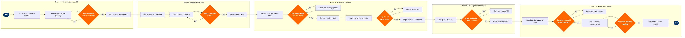

| Step | L4 Step Name | KPI / Target | Pain Point / Risk | Gate |
|---|---|---|---|---|
| 1.1 | Activate DCS flight check-in window | Check-in window live within 2 min of scheduled T-24h open time | Altéa DCS activation can lag if PSS flight record contains schedule irregularity codes from prior disruption; agents must manually resolve before window opens | |
| 1.2 | Transmit APIS data to government gateway | APIS transmission ≥99.5% success rate; all records sent ≥60 min pre-departure | Incomplete passport data in PNR (collected via NDC or OTA) prevents automated APIS; agents must manually collect at counter, increasing queue time by avg 4 min/pax | |
| 1.3 | Validate APIS clearance response from authority | APIS clearance rate ≥99.8%; inhibit rate <0.2% on domestic sectors | CBP Inhibit responses arrive without explanation; agents must contact CBP Passenger Analysis Unit directly, causing delays of 15–45 min with no SLA guarantee | ⚠ |
| 2.1 | Process web/mobile self-service check-in | Web/mobile check-in adoption ≥65% of pax; avg session completion <3 min | Altéa Web Check-In has limited SSR (special service request) handling — passengers requiring wheelchair, UMNR, or PETC must complete check-in at counter, reducing self-service deflection rate | |
| 2.2 | Process airport kiosk check-in | Kiosk transaction time ≤90 sec avg; kiosk availability ≥98.5% uptime | CUSS kiosk MRZ readers degrade in high-throughput environments; passport scan failure rate >5% triggers agent-assisted queue diversion, negating kiosk capacity benefit | |
| 2.3 | Counter check-in for SSR & irregular pax | Counter transaction time ≤4 min/pax; SSR coding accuracy 100% | Altéa DCS SSR codes not always consumed by downstream ramp/catering systems in real time; WCHR requests can fail to appear on OCS load sheet if coded after T-45 min | |
| 2.4 | Verify travel documents & eligibility to travel | Document check failure rate <0.5%; inadmissible pax rate <0.1% of international sector pax | Timatic database lags behind real-time government policy changes (e.g., COVID-era entry requirements updated faster than Timatic refresh); airlines face deportation liability and repatriation costs averaging $3,000–$5,000 per inadmissible passenger | ⚠ |
| 2.5 | Issue boarding pass and confirm check-in | Boarding pass issuance within 30 sec of check-in completion; barcode scan success rate ≥99.9% at gate | Mobile boarding pass wallet integration (Apple Wallet / Google Wallet) requires Altéa connector; third-party OTA bookings may not receive push update if itinerary changed post-check-in, causing boarding pass mismatch at gate | |
| 3.1 | Accept, weigh & measure checked baggage | Baggage acceptance transaction ≤90 sec; excess bag fee collection accuracy 100% | SITA BagDrop scale calibration drift causes weight discrepancies; bags near allowance threshold require re-weighing at counter, increasing queue time and creating customer disputes | ⚠ |
| 3.2 | Print & apply IATA 10-digit baggage tag | Bag tag print success rate ≥99.8%; bag tag scan read rate at sortation ≥99.5% | Altéa bag tag thermal print quality degrades in high-humidity airport environments; low-contrast tags fail sortation OCR/barcode readers, causing misrouting — IATA Resolution 753 tracking mandates every bag event be captured | |
| 3.3 | Induct bags into EDS/TSA screening belt | Bag induction-to-screening time ≤15 min; EDS throughput ≥1,200 bags/hr per lane | TSA EDS systems are airport authority / TSA-owned, not airline-controlled; EDS lane outages cause cascading bag delays with no airline SLA recourse — peak holiday periods see queue back-ups exceeding 45 min | ⚠ |
| 3.4 | Resolve EDS alarm — security secondary screening | Secondary screening resolution time ≤20 min pre-departure; cleared bags ≥95% make flight | Manual EDS secondary screening has no airline-controlled SLA; if passenger has already boarded, policy requires offloading all bags and re-matching — per TSA requirement — causing departure delay averaging 22 min | ⚠ |
| 4.1 | Open gate & configure boarding group sequence | Gate open ≥35 min pre-departure; boarding group display accuracy 100% | Gate assignments change frequently due to aircraft swaps; SITA AMS gate change notification can lag DCS by 3–5 min, causing agents to set up at wrong gate — high at congested hubs like ATL and ORD | |
| 4.2 | Assess oversale position & solicit volunteers | VDB offer initiated ≥25 min pre-departure; IDB (involuntary) rate <0.05 per 10,000 boarded (DOT threshold) | Altéa DCS overbooking display does not auto-factor no-show passengers from connecting flights until T-15 min; late confirmation of actual seat count means VDB offers are solicited unnecessarily or too late for proper compensation negotiation | ⚠ |
| 4.3 | Process VDB compensation & rebook denied pax | VDB compensation processing time ≤8 min; rebooking on same-day flight ≥85% of VDB cases | Voucher issuance system integration with Altéa DCS is not real-time at all stations; agents at outstations must use paper vouchers subject to fraud risk and delayed reconciliation in SAP S/4HANA AR | |
| 5.1 | Scan boarding passes & verify pax identity | Gate scan throughput ≥30 pax/min; scan success rate ≥99.5%; first scan read rate ≥99% | Mobile boarding pass screen brightness and barcode display inconsistency (especially on cracked screens) causes scan failures; SITA gate reader firmware version mismatches with Altéa DCS on shared CUTE gates cause intermittent rejections during irregular ops re-accommodation | ⚠ |
| 5.2 | Perform final headcount & manifest reconciliation | Manifest accuracy 100% (regulatory — FAR 121.693); reconciliation completed ≥5 min pre-departure | Gate reader offline events (network drop at remote stands) cause boarding records to queue locally and sync after pushback begins; manifest can show in-transit counts that require captain confirmation, delaying doors-closed by 3–8 min | ⚠ |
| 5.3 | Transmit final load sheet & close flight in DCS | Load sheet transmitted ≥3 min pre-pushback; captain acceptance acknowledgement received 100% of flights | ACARS OOOI message timing and load sheet transmission depend on aircraft avionics connectivity; older narrowbody aircraft without VHF ACARS datalink require VHF voice relay, increasing workload for dispatch and introducing manual transcription errors in weight & balance |